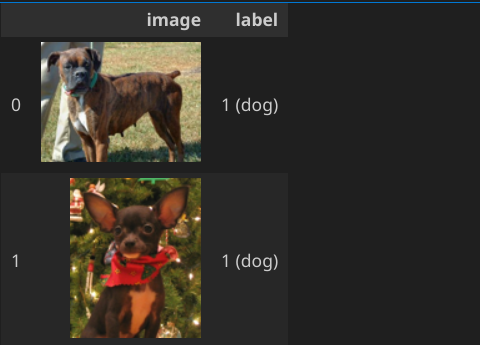
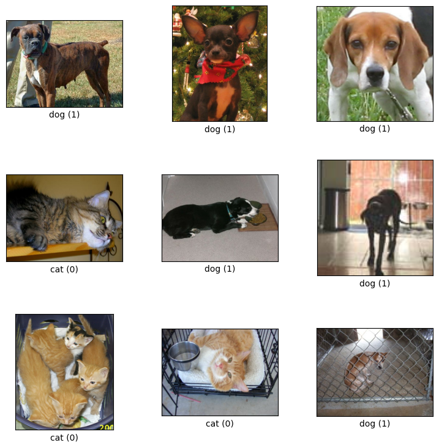
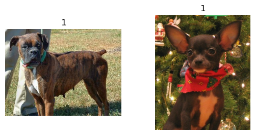

Understanding tfds
What does train_ds.take(2) do?
train_ds is one of the return values of
(train_ds, val_ds, test_ds), metadata = tfds.load(
'tf_flowers',
data_dir=DATA_PATH,
split=['train[:80%]', 'train[80%:90%]', 'train[90%:]'],
with_info=True,
as_supervised=True,
)
Process of loading datasets
On the Overview page
https://www.tensorflow.org/datasets/api_docs/python/tfds
there is a link to a Colab tutorial:
https://colab.research.google.com/github/tensorflow/datasets/blob/master/docs/overview.ipynb
In the section "Load a dataset":
tfds.load() will download the data and save it as tfrecord files.
For example, if we set the parameter data_dir to
tfds.load(
'mnist',
data_dir="local_data/tfds",
the directory local_data/tfds/mnist/3.0.1 will contain the files
dataset_info.json
features.json
image.image.json
mnist-test.tfrecord-00000-of-00001
mnist-train.tfrecord-00000-of-00001
TFRecord and tf.train.Example
https://www.tensorflow.org/tutorials/load_data/tfrecord
Observations
(train_ds, validation_ds), metadata= tfds.load(
"cats_vs_dogs",
data_dir=DATA_PATH,
split=["train[:40%]", "train[40%:50%]"],
with_info=True,
as_supervised=True,
)
tfds.as_dataframe(train_ds.take(2), metadata)

fig = tfds.show_examples(train_ds, metadata)

plt.figure(figsize=(10, 10))
for i, (image, label) in enumerate(train_ds.take(2)):
ax = plt.subplot(3, 3, i + 1)
plt.imshow(image)
plt.title(int(label))
plt.axis("off")

Effect of
size = (150, 150)
train_ds = train_ds.map(lambda x, y: (tf.image.resize(x, size), y))
|
| Before |
After |
|
tfds.as_dataframe(train_ds.take(2), metadata)
|
| |
Stallion |
|
tfds.as_dataframe(train_ds.take(2), metadata)
|
| |
Stallion |